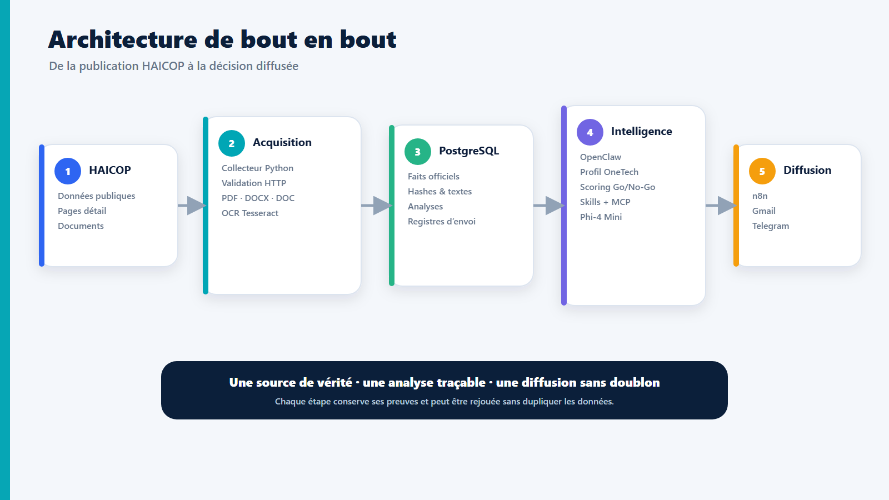
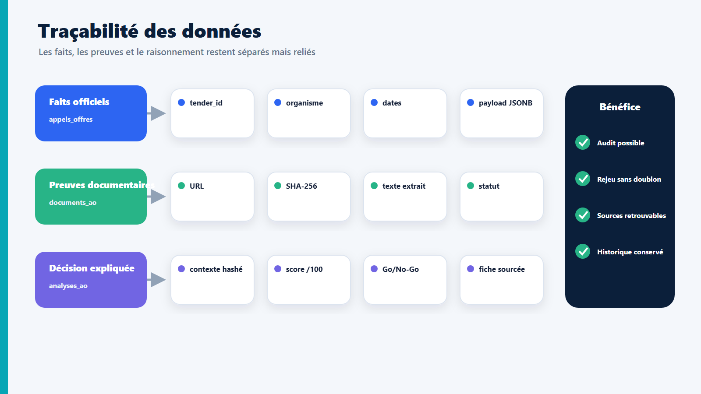
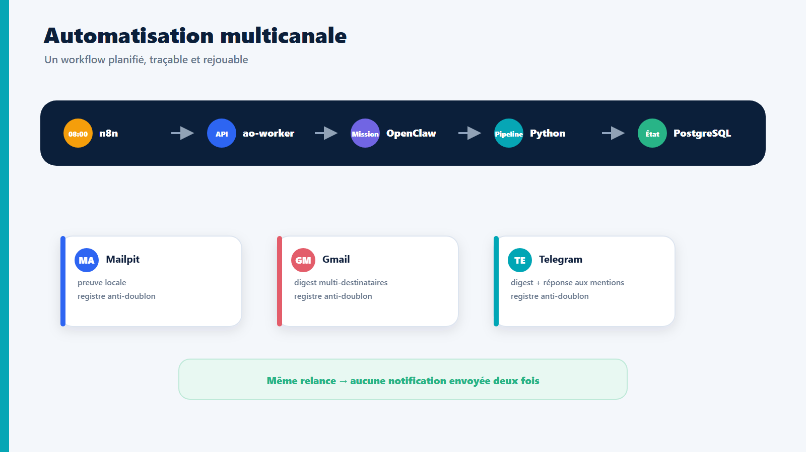
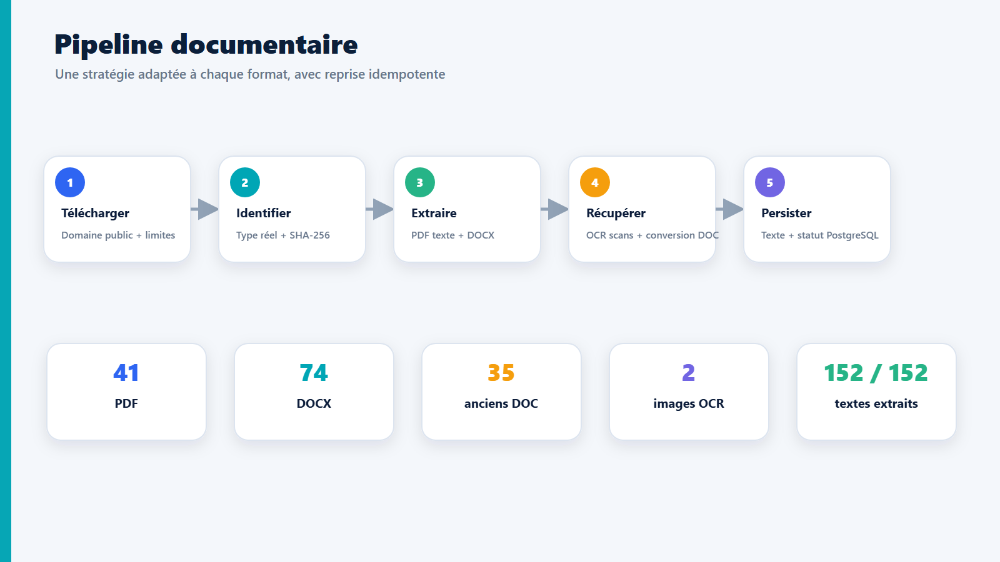
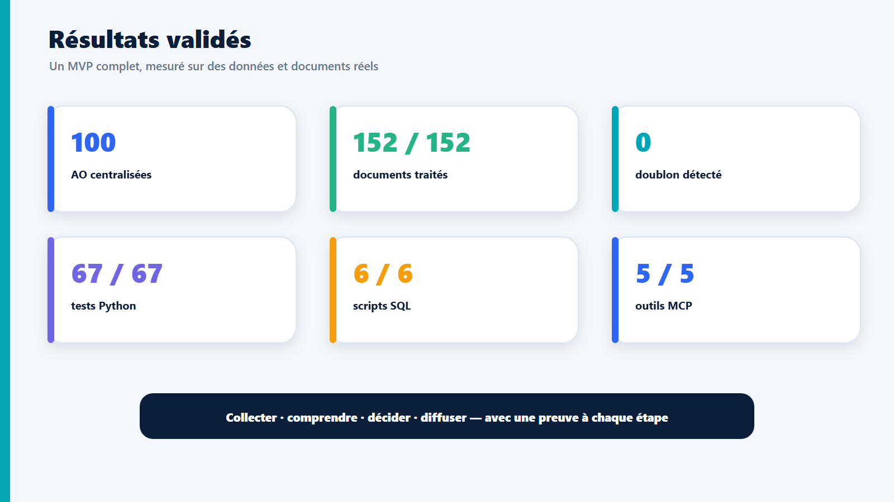

Remerciements
Je tiens à remercier mon encadrant en entreprise pour son accompagnement, ses retours et la confiance accordée tout au long de ce projet. Ses orientations ont permis de faire évoluer un premier prototype de collecte vers une plateforme complète intégrant persistance, analyse, automatisation et interopérabilité.
Je remercie également les équipes de One Tech Business Solutions pour le cadre professionnel offert, les échanges métier et les retours ayant contribué à préciser les usages attendus du système.
Enfin, j’adresse mes remerciements à mon établissement, à mon encadrant académique ainsi qu’à toutes les personnes ayant contribué à ma formation et au bon déroulement de ce stage.
Résumé exécutif
Ce stage porte sur le développement d’un système d’intelligence artificielle agentique destiné à assister la gestion des appels d’offres publics. Le besoin initial est de réduire le temps consacré à la veille, au téléchargement des documents, au tri des opportunités et à la préparation d’une première décision Go/No-Go. La source publique retenue pour le prototype est la plateforme HAICOP des marchés publics tunisiens.
La solution développée, nommée OneTech Tender Agent, repose sur une architecture modulaire. Un collecteur Python interroge les pages et endpoints publics HAICOP, normalise les informations et les enregistre dans PostgreSQL. Les documents liés aux appels d’offres sont téléchargés de manière bornée, contrôlés par empreinte SHA-256, puis traités selon leur format. L’extraction prend en charge PDF, DOCX, anciens DOC, PNG et JPEG ; les documents scannés sont soumis à un OCR Tesseract. OpenClaw utilise ensuite le contexte factuel conservé dans PostgreSQL pour produire une fiche d’analyse structurée et une décision Go/No-Go traçable. Les faits officiels et le raisonnement généré sont volontairement stockés dans des tables distinctes.
L’automatisation quotidienne est orchestrée par n8n. Elle déclenche un worker authentifié, lequel confie à l’instance OpenClaw de l’entreprise une mission bornée : collecter, traiter, analyser, générer un digest et le diffuser. Les notifications sont envoyées par Gmail et Telegram, avec une preuve de diffusion par destinataire afin d’empêcher les doublons en cas de relance. Un serveur MCP expose également cinq outils contrôlés pour permettre à d’autres clients compatibles d’accéder aux mêmes capacités. Enfin, un petit modèle local Phi-4 Mini a été évalué via Ollama comme second avis expérimental.
Le snapshot final validé contient 100 appels d’offres et 152 documents. Les 152 fichiers sont présents, hashés et dotés d’un texte extrait. Aucun doublon d’appel d’offres ou de document n’est détecté. La campagne de validation comprend 67 tests Python et 6 scripts SQL, tous réussis. Une sauvegarde complète a par ailleurs été restaurée dans une base PostgreSQL isolée puis vérifiée. Le projet fournit ainsi un socle reproductible, auditable et extensible pour la veille et l’aide à la décision, tout en maintenant une validation humaine sur les décisions engageantes.
Mots-clés : IA agentique, appels d’offres, HAICOP, OpenClaw, PostgreSQL, Docker, n8n, OCR, MCP, Go/No-Go, automatisation.
Abstract
This internship project focuses on the development of an agentic artificial intelligence system supporting public tender management. The objective is to reduce the time spent monitoring opportunities, downloading and reading documents, filtering irrelevant tenders and preparing an initial Go/No-Go assessment.
The resulting system, OneTech Tender Agent, combines a Python collector, PostgreSQL, document processing, OpenClaw-based analysis, n8n orchestration, email and Telegram delivery, and a bounded MCP server. Public HAICOP data is normalized and persisted with idempotent upserts. Public documents are safely downloaded, hashed and processed through native text extraction, OCR or legacy DOC conversion. Official facts are kept separate from model-generated reasoning, providing traceability and safer re-evaluation.
The validated snapshot contains 100 tenders and 152 fully processed documents, with no tender or document duplicates. Sixty-seven Python tests and six SQL test scripts passed. The project demonstrates a reproducible and auditable end-to-end workflow while keeping human validation mandatory for business decisions.
Keywords: agentic AI, public tenders, PostgreSQL, OpenClaw, n8n, OCR, MCP, automation, Go/No-Go.
Table des matières
- Remerciements
- Résumé exécutif
- Abstract
- Table des matières
- 1. Introduction générale
- 2. Présentation du contexte et problématique
- 3. État de l’art et choix technologiques
- 4. Analyse des besoins et spécifications
- 5. Conception et architecture
- 6. Réalisation
- 7. Validation, tests et résultats
- 8. Gestion du projet
- 9. Qualité, sécurité et responsabilité
- 10. Conclusion et bilan
- 11. Glossaire
- 12. Bibliographie et sitographie
- 13. Annexes
1. Introduction générale
Les appels d’offres publics constituent une source importante d’opportunités pour les entreprises de services numériques. Leur traitement reste néanmoins coûteux en temps. Il faut surveiller les publications, interpréter des champs hétérogènes, ouvrir les pages détaillées, télécharger plusieurs documents, vérifier les dates et conditions, identifier les pièces manquantes et décider si l’opportunité correspond réellement aux capacités de l’entreprise.
Une simple recherche par mots-clés ne suffit pas. Un titre apparemment informatique peut masquer un achat essentiellement matériel, tandis qu’un dossier pertinent peut employer un vocabulaire différent de celui du profil de l’entreprise. De plus, les documents sont publiés dans des formats variés : PDF texte, PDF scanné, DOCX, ancien DOC ou image. Enfin, une automatisation réelle doit être capable de reprendre après une erreur, éviter les doublons, conserver une trace de ce qui a été lu et ne jamais confondre les données d’un appel d’offres avec des instructions adressées à l’agent.
Le sujet du stage a donc été formulé ainsi :
Développement d’un système IA agentique pour la gestion des appels d’offres publics.
Le projet vise moins à construire un unique script qu’à assembler un système capable de percevoir des données publiques, de les structurer, de mobiliser des outils spécialisés, de produire une analyse explicable et de diffuser un résultat utile. La dimension agentique réside dans l’orchestration de plusieurs étapes et outils, tandis que les opérations sensibles ou déterministes restent implémentées dans des composants Python contrôlés.
La démarche suivie a été incrémentale. Un premier proof of concept a validé l’accès aux données publiques et l’analyse de trois dossiers. La solution a ensuite évolué vers PostgreSQL, un traitement documentaire complet, une analyse persistée, un digest quotidien, une automatisation n8n, des notifications multi-canaux, un serveur MCP et des mécanismes d’exploitation. Cette progression a permis de tester chaque couche avant d’ajouter la suivante.
Le présent rapport expose le contexte, les choix techniques, la conception, l’implémentation et les validations du système. Il met en évidence les réalisations, les décisions d’ingénierie, les résultats mesurés et les compétences développées pendant le stage.
2. Présentation du contexte et problématique
2.1 Entreprise d’accueil
Le projet a été réalisé pour One Tech Business Solutions, entité rattachée à One Tech Group. Le profil métier utilisé dans le prototype, validé en version V1 pour le scoring, retient les domaines suivants :
- développement logiciel ;
- intégration de systèmes et de systèmes d’information ;
- intelligence artificielle et Data ;
- automatisation ;
- solutions numériques et transformation digitale.
Les opportunités favorisées concernent donc les logiciels, les applications web, les plateformes numériques, l’intégration SI, l’IA, la Data et l’automatisation. À l’inverse, les travaux publics, la construction, les fournitures alimentaires, le matériel médical et les achats purement matériels sans composante logicielle sont pénalisés.
Le profil métier V1 utilisé par le moteur de présélection a été validé pour le périmètre de ce prototype. Il constitue la référence de scoring et permet de rejeter les opportunités manifestement hors domaine sans inventer de capacités qui ne figurent pas dans le référentiel.
2.2 Contexte des appels d’offres publics
La source retenue pour le prototype est la plateforme publique tunisienne
HAICOP, accessible depuis marchespublics.gov.tn. Elle met à disposition une
liste de marchés, des pages détaillées et des documents publics. Certaines
actions de soumission ou certains documents peuvent dépendre de TUNEPS et d’une
authentification. Le projet se limite strictement aux ressources publiques et
ne contourne aucune authentification.
Un appel d’offres peut être décrit par un identifiant, un organisme, un titre, une date de publication, une date limite, un lien de détail et plusieurs documents. Ces informations ne sont pas toujours complètes ni homogènes. Une solution utile doit donc conserver la donnée originale, tout en proposant une représentation normalisée pour la recherche et le tri.
2.3 Problématique
La problématique peut être formulée de la manière suivante :
Comment concevoir un système agentique capable de collecter de manière fiable des appels d’offres publics, d’en traiter les documents hétérogènes, d’en évaluer la pertinence pour One Tech, puis de diffuser un résultat traçable, sans doublon et sans automatiser abusivement la décision finale ?
Cette problématique se décompose en plusieurs difficultés :
- Collecte fiable : gérer pagination, délais réseau, réponses hétérogènes, encodage et indisponibilités temporaires.
- Persistance : conserver les faits officiels et l’historique des collectes sans créer de doublons lors des relances.
- Traitement documentaire : prendre en charge plusieurs formats, détecter les scans et limiter les risques associés aux téléchargements.
- Analyse : fournir au modèle un contexte complet et vérifiable, séparer ses conclusions des faits, puis contrôler la cohérence des scores.
- Automatisation : planifier le pipeline, gérer les reprises et empêcher les doubles envois.
- Interopérabilité : exposer les capacités à OpenClaw et à des clients compatibles MCP sans ouvrir une interface arbitraire ou dangereuse.
- Exploitation : sauvegarder, restaurer, contrôler et redémarrer la plateforme sur une machine Windows.
2.4 Objectifs du projet
Objectif principal
Développer un prototype opérationnel d’assistance agentique à la veille et à l’analyse d’appels d’offres publics.
Objectifs fonctionnels
- collecter les AO publiques récentes de HAICOP ;
- normaliser et enregistrer les données dans PostgreSQL ;
- télécharger et extraire les documents associés ;
- présélectionner les AO cohérentes avec le profil One Tech ;
- produire une fiche structurée et une recommandation Go/No-Go ;
- générer un digest quotidien ;
- diffuser le digest par email et Telegram ;
- permettre aux membres du groupe Telegram d’interroger l’agent ;
- rendre les fonctions principales disponibles via MCP.
Objectifs non fonctionnels
- idempotence des collectes, traitements et diffusions ;
- traçabilité des sources et des décisions ;
- séparation entre faits officiels et contenu généré ;
- tokens, clés OAuth et secrets d’infrastructure exclus du dépôt et des journaux ;
- identifiants locaux de démonstration explicitement documentés et à renouveler avant tout partage ;
- tolérance aux erreurs et reprise ;
- reproductibilité par Docker Compose ;
- observabilité par journaux, pgAdmin, n8n et tables d’audit ;
- protection contre les documents malveillants et les instructions injectées dans les AO.
2.5 Livrables réalisés
Le périmètre réalisé couvre la collecte HAICOP, la base PostgreSQL, le traitement documentaire, l’analyse Go/No-Go, l’automatisation n8n, les notifications Gmail et Telegram, les outils MCP, le benchmark local, la sauvegarde et le contrôle d’exploitation. Ces capacités sont reliées dans un MVP unique et ont été validées sur les données réelles du projet.
3. État de l’art et choix technologiques
3.1 Automatisation classique et approche agentique
Une automatisation classique suit un enchaînement entièrement prédéfini : lire une source, appliquer des règles et produire un résultat. Cette approche est efficace pour les tâches déterministes, mais devient rigide lorsque les documents varient fortement ou qu’une analyse sémantique est requise.
Un système agentique ajoute une couche de raisonnement et d’orchestration. Un agent reçoit un objectif, choisit les outils autorisés, lit leurs résultats et enchaîne les actions nécessaires. Il faut toutefois distinguer :
- le modèle, qui génère et interprète du langage ;
- l’agent, qui encadre le modèle, lui fournit un contexte et des outils ;
- les outils, qui effectuent les opérations fiables, comme une requête SQL ou un téléchargement ;
- le workflow, qui limite l’ordre et le périmètre des actions.
Dans ce projet, OpenClaw représente la couche agentique. Python reste responsable des opérations déterministes. Cette séparation réduit le risque de laisser le modèle inventer une opération technique ou modifier arbitrairement les données.
3.2 OpenClaw
OpenClaw est utilisé comme environnement agentique local. Une instance dédiée
à l’entreprise fonctionne séparément de l’instance personnelle, avec son propre
workspace, sa configuration et son gateway sur 127.0.0.1:18790. Les skills
collecte-haicop-ao et analyse-ao décrivent les procédures métier
autorisées.
Le rôle d’OpenClaw est de recevoir une demande en langage naturel, sélectionner la skill adaptée, appeler la CLI ou le serveur MCP, lire les résultats et produire une réponse synthétique. Les textes des AO sont traités comme des données non fiables, jamais comme des instructions adressées à l’agent.
3.3 Model Context Protocol
Le Model Context Protocol (MCP) définit une manière standard d’exposer des outils et des ressources à des modèles et agents. Son intérêt est de découpler la logique métier du client utilisé. Au lieu de créer une intégration spécifique pour chaque interface, le projet expose cinq opérations bornées :
collect_tenders;list_open_tenders;get_tender;analyze_tender;generate_digest.
Les entrées sont validées et les sorties limitées en taille. L’outil
analyze_tender ne prétend pas enregistrer une nouvelle décision : il lit une
analyse persistée ou prépare le contexte factuel nécessaire.
3.4 PostgreSQL
PostgreSQL a été choisi pour sa robustesse transactionnelle, ses contraintes d’intégrité, son support JSONB et ses capacités d’indexation. Les payloads HAICOP originaux sont conservés en JSONB afin de ne pas perdre des champs qui ne sont pas encore modélisés.
Le modèle relationnel permet en parallèle d’exprimer clairement les liens entre collectes, AO, documents, analyses et diffusions. Les contraintes uniques sont essentielles à l’idempotence : une relance met à jour la ligne existante au lieu d’en créer une seconde.
3.5 Docker et Docker Compose
Docker isole les services dans des conteneurs reproductibles. Docker Compose
décrit l’ensemble du stack : PostgreSQL, pgAdmin, Mailpit, worker et n8n. Le
groupe nommé workspace dans Docker Desktop correspond au nom du projet
Compose dérivé du dossier ; il ne s’agit pas d’un conteneur supplémentaire.
Les volumes conservent les données même lorsque les conteneurs sont recréés.
Un réseau privé permet aux services de se joindre par leur nom, par exemple
postgres:5432 depuis le worker, tandis que les interfaces locales sont liées
à 127.0.0.1.
3.6 n8n
n8n est un orchestrateur visuel de workflows. Il ne remplace pas Python ou
OpenClaw : il déclenche le pipeline à l’heure configurée, appelle le worker et
conserve l’historique des exécutions. Le workflow quotidien s’exécute les jours
ouvrés à 08:00 selon le fuseau Europe/Paris.
Un second workflow interroge Telegram et route uniquement les commandes, mentions du bot ou réponses à ses messages. Les conversations ordinaires du groupe sont ignorées.
3.7 OCR et traitement documentaire
L’extraction directe convient aux PDF comportant une couche texte et aux DOCX. Elle échoue sur les scans. Tesseract a donc été ajouté pour effectuer un OCR en français, arabe et anglais. Poppler rend les pages PDF en images avant OCR. Les anciens fichiers DOC sont convertis dans un profil LibreOffice temporaire et isolé. Des limites de taille, de temps et de nombre de pages empêchent une consommation incontrôlée des ressources.
3.8 Modèle local Phi-4 Mini
Phi-4 Mini a été installé via Ollama afin d’évaluer une alternative locale sur CPU. Le benchmark a retrouvé les deux décisions attendues et a permis de mesurer un temps d’inférence compris entre 79 et 105 secondes par AO. Cette expérience a validé l’intégration d’un modèle local comme outil de comparaison et a fourni des données concrètes pour attribuer à chaque modèle un rôle adapté.
4. Analyse des besoins et spécifications
4.1 Acteurs
| Acteur | Besoin principal |
|---|---|
| Collaborateur One Tech | Recevoir une veille concise et consulter les AO pertinentes |
| Analyste / responsable | Comprendre le score, les risques et les documents sources |
| Administrateur | Superviser les services, consulter les journaux et restaurer les données |
| OpenClaw entreprise | Accéder à des outils bornés et à un contexte vérifié |
| n8n | Déclencher des traitements idempotents selon un planning |
| Système HAICOP | Fournir les données et documents publics disponibles |
4.2 Cas d’utilisation principaux
UC1 — Collecter les AO
- L’utilisateur ou n8n demande une collecte.
- Le collecteur enregistre une exécution
en_cours. - Il interroge HAICOP avec pagination, timeout et reprise.
- Il normalise les AO et effectue des UPSERT.
- Il clôture l’exécution avec les compteurs ou l’erreur.
UC2 — Traiter les documents
- Le système sélectionne les documents
a_traiter. - Il valide le domaine et le chemin publics.
- Il télécharge le fichier dans une limite configurable.
- Il détecte le format réel et calcule le SHA-256.
- Il extrait le texte ou utilise OCR/conversion.
- Il enregistre statut, texte, hash et erreur éventuelle.
UC3 — Analyser une AO
- Le système exporte un contexte complet depuis PostgreSQL.
- Il calcule une empreinte SHA-256 déterministe du contexte canonique.
- OpenClaw lit toutes les sources et produit une fiche en neuf sections.
- La CLI vérifie notes, total, décision, statut documentaire et hash.
- L’analyse est enregistrée ou mise à jour de manière idempotente.
UC4 — Générer et diffuser le digest
- n8n appelle le worker authentifié.
- Le worker charge un prompt métier fixe et appelle l’OpenClaw entreprise.
- Le pipeline collecte, traite et analyse les candidats.
- Un digest Markdown est généré et hashé.
- Chaque canal réserve une preuve de diffusion.
- Gmail, Mailpit et Telegram reçoivent le message une seule fois.
UC5 — Répondre dans Telegram
- n8n interroge les mises à jour Telegram depuis un offset durable.
- Seules les mentions, commandes et réponses au bot sont retenues.
- Le contenu est nettoyé puis envoyé au worker.
- OpenClaw prépare une réponse avec le contexte OneTech autorisé.
- Telegram publie la réponse et PostgreSQL marque l’interaction
repondue.
4.3 Règles métier de scoring
La fiche Go/No-Go utilise quatre axes notés sur 25 :
- adéquation avec le profil One Tech ;
- faisabilité du délai ;
- charge administrative ;
- niveau de risque.
Le total est sur 100. La décision est contrôlée par la CLI selon les seuils
configurés. Une analyse partielle ne peut pas produire un GO définitif. Le
profil V1 pénalise également les achats matériels sans composante numérique
explicite. Le digest est autorisé à ne sélectionner aucune opportunité, plutôt
que de forcer un faux positif.
4.4 Critères d’acceptation
- deux collectes identiques ne créent aucun doublon ;
- un document terminé n’est pas retéléchargé lors d’une relance normale ;
- une analyse rejouée sur le même contexte réutilise son enregistrement ;
- un digest rejoué n’est pas renvoyé au même destinataire ;
- les erreurs ne révèlent aucun secret ;
- le système refuse une configuration Telegram pointant vers un chat privé ou le bot personnel ;
- les données de test sont annulées ou supprimées ;
- la restauration vérifie les compteurs avant de supprimer la base isolée ;
- le système peut être démarré et contrôlé par des scripts documentés.
5. Conception et architecture
5.1 Vue d’ensemble

Figure 1 — Architecture fonctionnelle et flux principaux de la solution.
L’architecture combine deux styles :
- un pipeline déterministe pour collecte, base, fichiers et diffusion ;
- une couche agentique pour interpréter les documents et orchestrer les skills.
5.2 Services Docker
| Service | Rôle | Persistance / exposition |
|---|---|---|
postgres |
Base centrale du projet | Volume onetech_postgres_data, port local 5432 |
pgadmin |
Administration graphique | Volume onetech_pgadmin_data, port local 5050 |
mailpit |
Canal email local de test | Volume onetech_mailpit_data, ports 8025/1025 |
ao-worker |
Passerelle FastAPI bornée vers OpenClaw | Données projet montées dans /app/data, port interne 8080 |
n8n |
Planification et orchestration | Volume onetech_n8n_data, port local 5678 |
Les ports sont liés à 127.0.0.1 afin de ne pas exposer directement les
services au réseau. ao-worker reste accessible uniquement dans le réseau
Docker.
5.3 Modèle de données

Figure 2 — Séparation et liaison des faits officiels, preuves documentaires et analyses.
Tables principales
collectes_haicop: journal d’exécution du collecteur ;appels_offres: faits officiels HAICOP, clétender_id;documents_ao: URLs, fichiers locaux, hash, statut et texte extrait ;analyses_ao: fiches et scores générés, séparés des faits ;executions_quotidiennes: état de chaque pipeline planifié ;candidats_execution: AO retenues pour une exécution ;diffusions_digest: registre d’envoi par canal et destinataire ;telegram_poll_state: offset durable des updates Telegram ;telegram_interactions: registre haché des mentions et réponses.
Idempotence
L’idempotence signifie qu’une même action rejouée produit le même état sans duplication. Elle est assurée par :
- clé primaire
tender_idpour les AO ; - contrainte unique
(tender_id, url)pour les documents ; - empreinte du contexte et de la fiche pour les analyses ;
- contrainte
(execution_id, canal, destinataire_hash)pour les diffusions ; - unicité de
update_idet de(chat_hash, message_id)pour Telegram.
5.4 Séquence quotidienne

Figure 3 — Orchestration n8n, exécution du pipeline et diffusion multicanale.
5.5 Séparation des responsabilités
Le système évite de confier au modèle les responsabilités qui peuvent être codées et testées :
- Python : validation d’URL, HTTP, parsing, SQL, hash, fichiers, envoi ;
- PostgreSQL : intégrité, contraintes, transactions et audit ;
- OpenClaw : choix de skills, lecture sémantique et rédaction ;
- n8n : planification et déclenchement ;
- MCP : interface standard et bornée ;
- humain : validation finale d’une décision ou d’une soumission.
6. Réalisation
6.1 Organisation du code
Le package onetech_ao est structuré par responsabilités :
src/onetech_ao/
├── config.py configuration et variables d’environnement
├── haicop.py client HTTP, normalisation et parsing
├── collector.py orchestration de la collecte
├── database.py accès PostgreSQL et transactions
├── documents.py téléchargement, hash, extraction, OCR et conversion
├── analysis.py contexte, empreinte et validation des fiches
├── automation.py runs quotidiens, digest et diffusion
├── telegram.py client Telegram et parsing des interactions
├── worker.py API FastAPI contrôlée pour n8n
├── mcp_server.py cinq outils MCP bornés
└── cli.py interface en ligne de commande JSON
Cette organisation facilite les tests unitaires et évite un script monolithique.
6.2 Collecteur HAICOP
Le client HAICOP utilise des requêtes HTTPS vérifiées, des timeouts, un
User-Agent explicite et une pagination de type DataTables. Les fonctions de
normalisation convertissent les identifiants, dates, booléens et textes dans
des types stables. Le payload original reste disponible dans donnees_brutes.
Avec l’option --with-details, le collecteur visite chaque page publique,
extrait les champs supplémentaires et retient uniquement les URLs de documents
correspondant au chemin public attendu. La collecte est journalisée : elle
commence avec statut=en_cours, puis devient terminee ou echec avec ses
compteurs.
La dernière indisponibilité observée a été un ConnectTimeout HAICOP. Elle a
été enregistrée comme échec sans altérer les 100 AO déjà stockées. Ce cas
illustre l’intérêt de dissocier la disponibilité de la source et la
disponibilité du référentiel local.
6.3 UPSERT et transactions PostgreSQL
Le collecteur utilise INSERT ... ON CONFLICT DO UPDATE. Une AO nouvelle est
insérée ; une AO déjà connue est mise à jour et sa date de dernière collecte
est actualisée. Les documents utilisent la paire (tender_id, url).
Les valeurs sont transmises à psycopg par paramètres, et non concaténées dans
le SQL. Les transactions garantissent qu’une erreur grave provoque un rollback
au lieu de laisser un lot partiellement enregistré.
Les migrations SQL sont versionnées de 001_schema.sql à
007_telegram.sql. Elles sont idempotentes et s’appliquent dans l’ordre par un
script PowerShell.
6.4 Traitement des documents

Figure 4 — Téléchargement, identification, extraction, OCR/conversion et persistance.
Le processeur sélectionne les documents à traiter et vérifie l’URL avant tout téléchargement. Il refuse les domaines ou chemins non autorisés, borne les redirections et limite la taille. Le type réel est détecté à partir du contenu et non uniquement de l’extension.
Après téléchargement :
- le fichier est stocké sous
data/documents/; - une empreinte SHA-256 est calculée ;
- les archives DOCX sont contrôlées ;
- le texte est extrait selon le format ;
- le résultat et le statut sont enregistrés dans PostgreSQL.
Pour un PDF sans couche texte, les pages sont rendues par Poppler, contrôlées puis soumises à Tesseract. Les anciens DOC sont convertis par LibreOffice en mode headless, dans un profil temporaire isolé et avec timeout. Les fichiers temporaires sont supprimés, même en cas d’échec.
Le traitement est reprenable : les documents extrait sont ignorés lors d’une
relance normale ; les erreurs peuvent être retentées ; une option de
retraitement permet de bénéficier d’un parseur amélioré sans retélécharger.
6.5 Contexte et analyse Go/No-Go
La commande analysis-context joint les faits HAICOP, les champs détaillés,
le profil One Tech et le texte de tous les documents. Elle produit un fichier
JSON local et une empreinte SHA-256 déterministe. Les timestamps opérationnels et chemins
locaux sont exclus de l’empreinte, contrairement aux faits et contenus utiles.
OpenClaw lit ce contexte et produit une fiche française de neuf sections. Avant
enregistrement, record-analysis vérifie :
- la présence de toutes les sections ;
- les quatre notes et le total ;
- la cohérence entre total et décision ;
- le statut
completeoupartielle; - l’empreinte du contexte ;
- la compatibilité avec les règles empêchant un faux
GO.
La fiche, le snapshot et les scores sont conservés dans analyses_ao. Un
replay du même contexte réutilise l’analyse au lieu de la dupliquer.
6.6 Automatisation n8n et worker
n8n appelle ao-worker plutôt que Python ou OpenClaw directement. Le worker
sert de frontière de sécurité : il n’accepte que des routes métier définies et
un token interne. Il charge des prompts versionnés et n’autorise pas n8n à
transmettre un prompt arbitraire au gateway.
Le workflow principal combine un déclencheur manuel et un déclencheur planifié.
Il appelle /runs/daily, attend la réponse et conserve l’historique dans n8n
et PostgreSQL. Les exécutions sont préparées, enrichies, finalisées puis
diffusées.
6.7 Gmail, Mailpit et multi-destinataires
Mailpit fournit une boîte locale de test sans Internet. Gmail est utilisé via OAuth, sans stocker de mot de passe SMTP. La liste de destinataires est lue depuis une variable d’environnement séparée par des virgules.
Avant chaque envoi, le système calcule le hash du digest et du destinataire. Il
réserve une ligne dans diffusions_digest. Si la même exécution a déjà été
envoyée au même destinataire, le résultat est deja_envoyee et aucun second
message n’est créé.
6.8 Telegram
L’intégration Telegram comporte deux fonctions : publication du digest et réponse aux membres du groupe.
Le digest est découpé en fragments compatibles avec la limite Telegram. Chaque fragment est suivi afin de permettre une reprise sans double publication. Le second workflow n8n maintient un offset durable et traite seulement :
- les commandes ;
- les mentions du bot ;
- les réponses à un message du bot.
Les autres conversations sont ignorées. L’identifiant du chat, de
l’expéditeur et le contenu sont conservés sous forme d’empreinte plutôt qu’en
clair dans les tables d’audit. La configuration finale utilise un identifiant
de groupe négatif et un bot dédié. La validation actuelle contient une
diffusion Telegram au statut envoyee et une interaction de type mention au
statut repondue, chacune en une tentative.
6.9 Serveur MCP
Le serveur onetech-tender utilise le transport stdio local. Les cinq outils
s’appuient sur les mêmes classes Python et la même base PostgreSQL que la CLI.
Les limites d’entrée empêchent les listes ou contextes excessifs et les erreurs
sont expurgées des secrets. Un doctor MCP et un appel en langage naturel ont
validé la découverte et l’exécution des cinq outils.
6.10 Exploitation, sauvegarde et contrôle
Des scripts PowerShell permettent de démarrer Docker Desktop, d’appliquer les migrations, d’activer les workflows, de lancer le gateway entreprise et Ollama, puis d’effectuer un contrôle de santé à la demande. Le lancement manuel est documenté par une commande unique et le healthcheck fournit un état explicite des services avant une démonstration ou une exécution du pipeline.
La sauvegarde comprend un dump PostgreSQL, l’état n8n, les workflows, les documents, contextes, digests, fiches, prompts et une configuration OpenClaw assainie. Les secrets ne sont pas sauvegardés. Un manifeste et des checksums SHA-256 garantissent l’intégrité.
7. Validation, tests et résultats
7.1 Stratégie de test
La validation combine quatre niveaux :
- Tests unitaires Python : normalisation, parsing, sécurité des URLs, extraction, scoring, Telegram et MCP.
- Tests d’intégration PostgreSQL : transactions, UPSERT, idempotence et nettoyage automatique des données factices.
- Smoke tests SQL : contraintes, vues, analyses, automatisation et Telegram, exécutés dans une transaction annulée.
- Tests bout en bout : collecte réelle, documents réels, analyse dans l’interface OpenClaw, diffusion Gmail/Telegram, MCP et restauration.
7.2 Résultats quantitatifs

Figure 5 — Synthèse des volumes, contrôles d’unicité et validations automatisées.
| Indicateur | Résultat validé |
|---|---|
| Appels d’offres stockés | 100 |
| Documents stockés | 152 |
| 41 | |
| DOC | 35 |
| DOCX | 74 |
| PNG | 1 |
| JPEG | 1 |
| Fichiers présents | 152 / 152 |
| Empreintes SHA-256 présentes | 152 / 152 |
| Textes extraits | 152 / 152 |
| Doublons AO | 0 |
| Doublons documents | 0 |
| Documents en attente / échec | 0 |
| Tests Python | 67 / 67 réussis |
| Scripts SQL | 6 / 6 réussis |
| Outils MCP | 5 / 5 découverts et testés |
7.3 Validation de l’idempotence
Lors de la première collecte PostgreSQL de référence, 20 AO et 30 documents ont été insérés. La seconde collecte identique a mis à jour les mêmes 20 AO et 30 documents sans augmenter les compteurs. Les doublons sont restés à zéro.
Le même principe a été validé pour :
- le traitement documentaire, avec zéro document en attente au replay ;
- l’analyse, qui réutilise l’ID existant pour le même contexte ;
- Mailpit et Gmail, avec statut
deja_envoyeeau retry ; - Telegram, avec contraintes d’unicité sur les updates et messages.
7.4 Cas d’analyse réels
Tender-103283
- organisme : Société Nationale Immobilière Snit Centre ;
- deux documents sur deux extraits ;
- adéquation : 0/25 ;
- délai : 20/25 ;
- administratif : 1/25 ;
- risque : 3/25 ;
- total : 24/100 ;
- décision :
NO_GO; - replay : analyse ID 23 réutilisée.
Tender-103307
- organisme : Hôpital Charles Nicolle de Tunis ;
- objet : acquisition d’équipements médicaux ;
- deux documents sur deux extraits ;
- total : 36/100 ;
- décision :
NO_GO; - analyse ID 53 ;
- replay sans doublon.
Ces cas démontrent qu’un document lisible ne signifie pas qu’une opportunité est adaptée au profil logiciel/IT de l’entreprise.
7.5 Correction d’un faux positif
Une AO concernant des équipements de formation au gaz avait initialement été retenue par un filtre trop permissif. L’analyse a attribué à tort un score élevé lors d’un test technique. Le filtre a été corrigé avec :
- recherche de mots entiers ;
- reconnaissance explicite des réseaux informatiques ;
- pénalité pour l’achat matériel ;
- seuil minimal de pertinence fixé à 6 ;
- interdiction d’un
GOdéfinitif pour une analyse partielle.
Après correction, cette AO obtient un score de pertinence négatif et ne figure plus dans les digests. Ce défaut a été conservé dans l’historique comme illustration de l’importance des tests métier.
7.6 Benchmark Phi-4 Mini
| Critère | Observation |
|---|---|
| Décisions attendues | 2 NO_GO correctement obtenus |
| Temps CPU | 79 à 105 secondes par AO |
| Intégration | Appel complet via Ollama et gateway OpenClaw |
| Résultat | Benchmark local achevé et documenté |
| Usage retenu | Comparaison locale et second avis |
Un tour complet via le gateway a nécessité environ 241 secondes. Le benchmark a donc permis de valider la chaîne locale et de mesurer précisément son coût d’exécution sur CPU.
7.7 Sauvegarde et restauration
La sauvegarde de référence contient 187 fichiers pour 34 455 690 octets. Elle
a été restaurée dans une base temporaire ; les neuf tables et leurs compteurs
ont été comparés, puis la base temporaire a été supprimée. Le rapport de drill
indique status=passed et temporary_database_removed=true.
7.8 Résilience face aux dépendances externes
La dernière collecte observée a échoué proprement avec un ConnectTimeout de
la liste HAICOP. Le système a :
- conservé les 100 AO déjà présentes ;
- créé un journal de collecte en échec ;
- enregistré une erreur concise sans secret ;
- laissé les autres services opérationnels.
Cette situation montre que le prototype tolère une indisponibilité temporaire de la source : l’incident est observable et le référentiel déjà constitué reste disponible pour l’analyse et la démonstration.
8. Gestion du projet
8.1 Démarche incrémentale
Le projet a suivi une approche itérative : chaque nouvelle capacité devait reposer sur une couche déjà validée. La chronologie technique reconstruite à partir des artefacts est la suivante :
| Date | Jalon |
|---|---|
| 26 juin 2026 | Confirmation du sujet et choix de la source publique tunisienne |
| 7 juillet 2026 | Premier PoC HAICOP et trois analyses conservées |
| 8 juillet 2026 | Retour encadrant et cadrage des jalons PostgreSQL, notifications, n8n, MCP et benchmark local |
| 20 juillet 2026 | Choix de la tranche collecteur → PostgreSQL → digest local |
| 4 août 2026 | Infrastructure PostgreSQL 16 et pgAdmin sous Docker |
| 8 août 2026 | Collecteur Python relié à PostgreSQL et double-run idempotent |
| 10 août 2026 | Traitement documentaire puis analyse PostgreSQL/OpenClaw |
| 11–17 août 2026 | Automatisation n8n, Mailpit et Gmail multi-destinataires |
| 18–25 août 2026 | OCR/DOC, Telegram, MCP, Phi, sauvegarde et contrôle d’exploitation |
Ces dates correspondent aux jalons du travail conservés dans le projet. Elles ne remplacent pas la période administrative officielle du stage, à indiquer sur la page de garde.
8.2 Versionnement
Le code a été organisé dans un dépôt Git privé. Les commits sont séparés par fonctionnalité : base, collecteur, documents, analyse, automatisation, MCP, Telegram et exploitation. Cette granularité permet d’identifier l’intention de chaque changement et de revenir à un état précédent.
Les tokens, clés OAuth, fichiers .env, données téléchargées volumineuses,
contextes générés et fichiers temporaires sont exclus du suivi. Le README privé
documente volontairement les trois identifiants locaux de démonstration n8n,
pgAdmin et PostgreSQL ; ils devront être renouvelés avant tout partage du dépôt.
Les migrations, tests, prompts, workflows et scripts d’exploitation sont versionnés.
8.3 Gestion des risques
| Risque | Réponse apportée |
|---|---|
| Indisponibilité HAICOP | Timeouts, journal d’échec, données locales préservées |
| Doublons | Clés, contraintes uniques, hashes et registres de diffusion |
| Document malveillant ou trop lourd | Domaine autorisé, limites, validation d’archive et timeout |
| Scan illisible | OCR multi-langue et statut observable |
| Ancien DOC | Conversion LibreOffice isolée |
| Hallucination du modèle | Sources, fiches structurées, validation stricte et humain final |
| Prompt injection dans une AO | Documents traités comme données non fiables |
| Fuite de secrets | .env, expurgation des erreurs, backup assaini |
| Double réponse Telegram | Offset durable et unicité des updates/messages |
| Perte de données | Volumes, sauvegarde checksummée et drill de restauration |
9. Qualité, sécurité et responsabilité
9.1 Principes de sécurité
Moindre privilège
Les services sont liés à localhost. Le worker n’expose qu’une API métier authentifiée dans le réseau Docker. Le serveur MCP n’expose que cinq outils bornés. n8n ne peut pas envoyer de prompt arbitraire au modèle.
Gestion des secrets
Les tokens, clés OAuth, clés de chiffrement et jetons du gateway sont conservés
dans .env ou dans la configuration locale ; ils n’apparaissent ni dans les
livrables de soutenance, ni dans les journaux applicatifs. Les sauvegardes
excluent également les secrets d’infrastructure.
Traçabilité
Les faits officiels, le contenu extrait, les analyses et les diffusions sont séparés. Les empreintes SHA-256 permettent de vérifier que le document ou le contexte analysé n’a pas changé. Les interactions Telegram sont auditées sans conserver les identifiants ni messages en clair dans les tables concernées.
9.2 Décision assistée et validation humaine
La décision Go/No-Go a un impact commercial. Le système prépare une
qualification, rassemble les preuves et rend ses critères lisibles ; la
validation finale appartient à l’équipe. Les fiches exigent des sources,
indiquent la couverture documentaire et lient la décision au hash du contexte.
Une analyse partielle ne peut pas produire un GO définitif.
9.3 Accès maîtrisé aux données publiques
Le collecteur n’utilise que les endpoints et documents publics HAICOP. Il ne contourne pas TUNEPS, ne réutilise pas de session non autorisée et ne soumet aucune offre. Ces frontières doivent rester explicites dans toute évolution.
9.4 Robustesse opérationnelle mise en œuvre
La robustesse repose sur des mécanismes complémentaires : timeouts et journaux de collecte, contraintes d’unicité, transactions SQL, limites de taille pour les fichiers, statuts d’extraction observables, offsets Telegram durables, registres d’envoi, sauvegarde checksummée et restauration isolée. Ces choix permettent de diagnostiquer un incident, de reprendre un traitement et de vérifier l’état obtenu sans perdre le référentiel déjà constitué.
10. Conclusion et bilan
Le projet a permis de construire une chaîne complète de veille et d’analyse agentique d’appels d’offres publics. Le passage d’un premier PoC à une architecture persistante et automatisée a demandé de traiter des difficultés concrètes : instabilité réseau, formats documentaires anciens, scans, doublons, cohérence des scores, sécurité des prompts, diffusion multi-canaux et reprise après incident.
La principale contribution réside dans la séparation claire entre les responsabilités. PostgreSQL conserve et contrôle l’état ; Python réalise les opérations déterministes ; OpenClaw orchestre l’analyse ; n8n planifie ; MCP standardise l’accès ; l’utilisateur garde la décision finale. Cette conception rend le système plus testable et auditable qu’un agent monolithique.
Les résultats montrent que le pipeline est techniquement opérationnel lorsqu’il est lancé : 100 AO centralisées, 152 documents intégralement traités, aucun doublon détecté, notifications Gmail et Telegram validées, cinq outils MCP exécutés, 67 tests Python réussis, six scripts SQL validés et une sauvegarde restaurée dans une base isolée. Une indisponibilité de HAICOP est journalisée sans altérer le référentiel local.
Ce stage a permis de mettre en pratique des compétences techniques — conception d’architecture, Python, PostgreSQL, Docker, traitement documentaire, API, automatisation, IA agentique, tests et sécurité — ainsi que des compétences transversales : autonomie, communication, organisation, esprit critique, persévérance et responsabilité. La valeur principale du travail réside dans un système cohérent où le modèle raisonne, le code vérifie et la base conserve la preuve.
11. Glossaire
| Terme | Définition |
|---|---|
| Agent | Système qui utilise un modèle, un contexte et des outils pour atteindre un objectif |
| AO | Appel d’offres |
| API | Interface permettant à deux logiciels de communiquer |
| CLI | Interface en ligne de commande |
| Digest | Synthèse périodique des opportunités et analyses |
| Docker | Plateforme de conteneurisation des services |
| Go/No-Go | Décision de poursuivre ou non l’étude/réponse à une opportunité |
| HAICOP | Instance tunisienne de contrôle et de suivi des marchés publics ; source publique utilisée |
| Hash SHA-256 | Empreinte cryptographique utilisée pour identifier un contenu |
| Idempotence | Propriété d’une opération rejouable sans effet supplémentaire indésirable |
| JSONB | Format JSON binaire et interrogeable de PostgreSQL |
| LLM | Grand modèle de langage |
| MCP | Model Context Protocol, protocole standard d’exposition d’outils aux agents |
| n8n | Outil d’orchestration visuelle de workflows |
| OCR | Reconnaissance optique de caractères dans une image ou un scan |
| OpenClaw | Environnement agentique utilisé pour orchestrer les skills et outils du projet |
| pgAdmin | Interface graphique d’administration PostgreSQL |
| PostgreSQL | Système de gestion de base de données relationnelle |
| Prompt injection | Tentative d’insérer des instructions malveillantes dans les données lues par un modèle |
| TUNEPS | Plateforme tunisienne d’achats publics en ligne soumise à authentification |
| UPSERT | Insertion si absent, mise à jour en cas de conflit |
12. Bibliographie et sitographie
- PostgreSQL Global Development Group, PostgreSQL 16 Documentation, https://www.postgresql.org/docs/16/, consulté le 25 août 2026.
- Docker, Docker Compose documentation, https://docs.docker.com/compose/, consulté le 25 août 2026.
- Python Software Foundation, Python 3 Documentation, https://docs.python.org/3/, consulté le 25 août 2026.
- Psycopg Project, Psycopg 3 Documentation, https://www.psycopg.org/psycopg3/docs/, consulté le 25 août 2026.
- n8n, n8n Documentation, https://docs.n8n.io/, consulté le 25 août 2026.
- Model Context Protocol, Official Documentation, https://modelcontextprotocol.io/, consulté le 25 août 2026.
- Ollama, Ollama Documentation, https://ollama.com/, consulté le 25 août 2026.
- Tesseract OCR, Tesseract User Manual, https://tesseract-ocr.github.io/, consulté le 25 août 2026.
- LibreOffice, Documentation — conversion et formats bureautiques, https://documentation.libreoffice.org/, consulté le 25 août 2026.
- Telegram, Telegram Bot API, https://core.telegram.org/bots/api, consulté le 25 août 2026.
- HAICOP / Marchés publics Tunisie, portail public, https://www.marchespublics.gov.tn/, consulté le 25 août 2026.
- Documentation interne du projet :
README.md,HISTORY.md,database/README.md,docs/OPERATIONS.mdet rapports E2E versionnés.
13. Annexes
Annexe A — Commandes principales
Démarrage complet
cd C:\Users\khaye\.openclaw-company\workspace
.\scripts\start-onetech-stack.ps1 -StartGateway -StartOllama
Contrôle global
.\scripts\healthcheck-onetech-stack.ps1 `
-RequireGateway -RequireOllama -RequireWorkflows -RequireMcp
Collecte
.\.venv\Scripts\python.exe -m onetech_ao.cli collect `
--limit 50 --with-details --process-documents
Statut
docker compose exec -T ao-worker python -m onetech_ao.cli status
Tests
.\.venv\Scripts\python.exe -m pytest -q
.\scripts\test-database.ps1
Sauvegarde et drill de restauration
.\scripts\backup-onetech-stack.ps1
.\scripts\test-onetech-backup-restore.ps1
Annexe B — Extraits SQL représentatifs
UPSERT d’un AO
INSERT INTO appels_offres (tender_id, organisme, titre, donnees_brutes)
VALUES (%s, %s, %s, %s)
ON CONFLICT (tender_id)
DO UPDATE SET
organisme = EXCLUDED.organisme,
titre = EXCLUDED.titre,
donnees_brutes = EXCLUDED.donnees_brutes,
derniere_collecte_le = clock_timestamp();
Recherche des AO ouvertes
SELECT tender_id, organisme, titre, date_limite
FROM v_appels_offres_ouverts
ORDER BY date_limite ASC NULLS LAST;
Annexe C — Architecture de référence
Le diagramme d’architecture intégré à la section 5.1 est livré séparément sous
les formats PNG et HTML dans le dossier livrables/. Il constitue la vue de
référence pour la soutenance et la documentation d’exploitation.
Annexe D — Artefacts de référence
README.md: installation, architecture et commandes ;HISTORY.md: chronologie technique ;compose.yaml: infrastructure Docker ;database/init/*.sql: migrations ;src/onetech_ao/: code Python ;automation/n8n/workflows/: workflows n8n ;skills/: skills OpenClaw ;docs/POSTGRES_ANALYSIS_E2E_REPORT_2026-08-10.md;docs/AUTOMATION_E2E_REPORT_2026-08-11.md;docs/OPERATIONS.md.
Annexe E — Matrice de validation finale
| Domaine vérifié | Résultat |
|---|---|
| Collecte HAICOP et persistance | 100 AO, aucun doublon |
| Traitement documentaire | 152/152 documents traités |
| Analyse et scoring | Fiches persistées et contrôles de cohérence actifs |
| Automatisation n8n | Workflow quotidien actif et rejouable |
| Diffusion Gmail | Multi-destinataires avec anti-doublon |
| Diffusion Telegram | Publication réelle et réponse à une mention validées |
| MCP | 5/5 outils découverts et exécutés |
| Sauvegarde/restauration | Drill isolé réussi avec checksums |
| Tests automatisés | 67 Python + 6 SQL réussis |